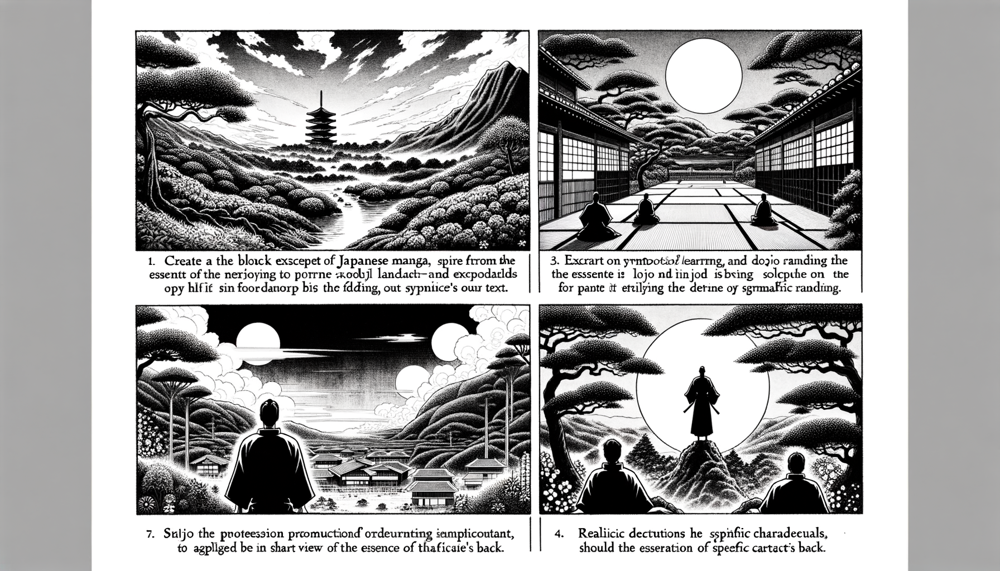

七十五巻 巻一覧
正法眼藏第21 授記
本ページは各巻の紹介ページです。tools/gen_web_volumes.py が doc/正法眼蔵.txt から要点の短い抜粋を載せています（全文の引用ではありません）。
出典（原文）: https://shomonji.or.jp/zazen/doc/genzou.html
原文・現代語訳の全文は 全文ページを参照してください。
この巻の紹介（概要）
道元『正法眼蔵』七十五巻の第21篇「授記」です。禅籍・経典への引用や語の行間が重なりやすいので、一度ですべてを要約に還元しない読み方を推奨します。問答 Bot では巻スコープにこの題名を含めると応答が安定しやすいことがあります。
語彙の足場
- 題名語：巻題「授記」は、道元が本章で特に扱う論点の看板です。辞書義だけに固定せず、原文中の用例で意味を確かめます。
- 引用と典故：公案・経文の引用は、一字一句の照応（何に答えているか）を押さえると全体が見えやすくなります。
- 学び方：抜粋だけでも音読し、分からない箇所は印を付けて後から問うとよいです。
原文（要点の抜粋）
当巻の冒頭付近からの短い抜粋です。長い引用は載せていません。全文は全文ページを参照してください。出典はリポジトリ内 doc/正法眼蔵.txt です。原文の参照元: https://shomonji.or.jp/zazen/doc/genzou.html
佛祖單傳の大道は授記なり。佛祖の參學なきものは、夢也未見なり。その授記の時節は、いまだ菩提心をおこさざるものにも授記す。無佛性に授記す、有佛性に授記す。有身に授記し、無身に授記す。諸佛に授記す。諸佛は諸佛の授記を保任するなり。得授記ののちに作佛すと參學すべからず、作佛ののちに得授記すと參學すべからず。授記時に作佛あり、授記時に修行あり。このゆゑに、諸佛に授記あり、佛向上に授記あり。自己に授記す、身心に授記す。授記に飽學措大なるとき、佛道に飽學措大なり。身前に授記あり、身後に授記あり。自己にしらるる授記あり、自己にしられざる授記あり。他をしてしらしむる授記あり、他をしてしらしめざる授記あり。
まさにしるべし、授記は自己を現成せり。授記これ現成の自己なり。このゆゑに、佛佛祖祖、嫡嫡相承せるは、これただ授記のみなり。さらに一法としても授記にあらざるなし。いかにいはんや山河大地、須彌巨海あらんや。さらに一箇半箇の張三李四なきなり。かくのごとく參究する授記は、道得一句なり、聞得一句なり。不會一句なり、會取一句なり。行取なり、説取なり。退歩を教令せしめ、進歩を教令せしむ。いま得坐披衣、これ古來の得授記にあらざれば現成せざるなり。合掌頂戴なるがゆゑに現成は授記なり。
佛言、それ授記に多般あれども、しばらく要略するに八種あり。いはゆる、
瓔珞第九、八種授記あり。
一者 自己知、他不知。
己知他不知者、發心自誓未廣及人、未得四無所畏、未得善權故（己知他不知とは、發心自誓未だ廣く人に及ばず、未だ四無所畏を得ず、未だ善權を得ざるが故に）。
二者 衆人盡知、自己不知。
衆人盡知、己不知者、發心廣大得無畏善權故（衆人盡知、己不知とは、發心廣大にして無畏善權を得るが故に）。
三者 自己衆人、倶知。
皆知者、位在七地、無畏善權、得空觀故（皆知とは、位七地に在りて、無畏善權、空觀を得るが故に）。
四者 自己衆人、倶不知。
皆不知者、未入七地、未得無著行（皆不知とは、未だ七地に入らず、未だ無著の行を得ず）。
図解（4コマ・AI生成）
教義の根拠は原文・出典に従い、漫画は比喩の補助に留めてください。

深掘り（読解のコツ）
- 道元文は定義の羅列に見えても、多くの場合誤解への遮断と正伝の姿勢が背骨になっています。
- 「当体」「現成」「即」などの語が出たら、その巻独自の差別相にどう接続しているかをメモしておくとよいです。